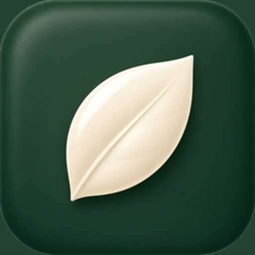

Поиск
Яндекс открывается по умолчанию. Значки поисковых систем хранятся в самом браузере. Над строкой — погода: температура и 3D-снег, дождь или солнце. Нажатие открывает Яндекс Погоду. В конце поля — микрофон, фотоаппарат и лупа.

Glove BrowserБраузер с вкладками, закладками и историей. На главной — погода с объёмными эффектами, поиск в Яндексе и подсказки во время ввода.
Яндекс открывается по умолчанию. Значки поисковых систем хранятся в самом браузере. Над строкой — погода: температура и 3D-снег, дождь или солнце. Нажатие открывает Яндекс Погоду. В конце поля — микрофон, фотоаппарат и лупа.
Вкладки, режим инкогнито, закладки, история, загрузки и поиск по открытой странице.
Долгое нажатие на значок Android открывает новую вкладку, инкогнито, сведения о приложении и виджет. Оформление повторяет тему телефона, а в настройках тёмную тему можно включить отдельно.
Бесплатные дополнения с картинками собраны на отдельной странице. В Windows они открываются своей кнопкой и работают на страницах. Дополнение с VPN подключает соединение браузера. Пароли сохраняются на устройстве, а сайт спрашивает разрешение на камеру, микрофон, экран и файлы.
Новая сборка сразу появляется на этой странице. Если установленная версия старше, под строкой адреса появляется розовая плашка. Крестик скрывает её до следующего запуска.
Минимальная версия Android — 8.0. Установщик Windows рассчитан на 64-битные Windows 7, 8, 10 и 11.